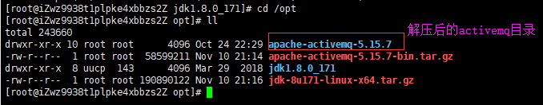
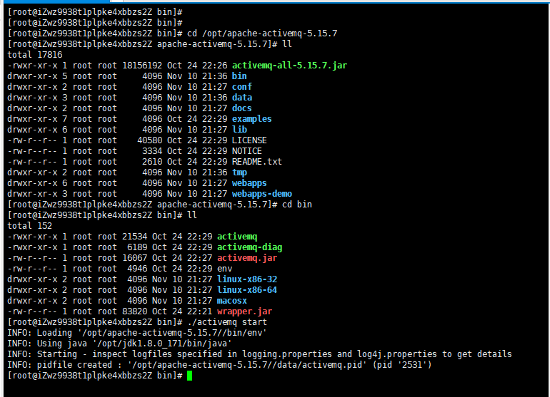
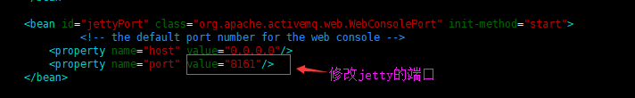
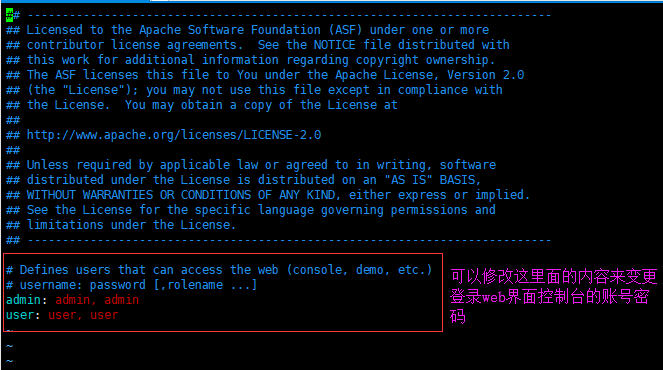
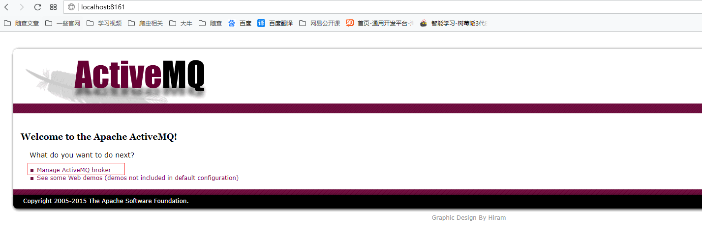
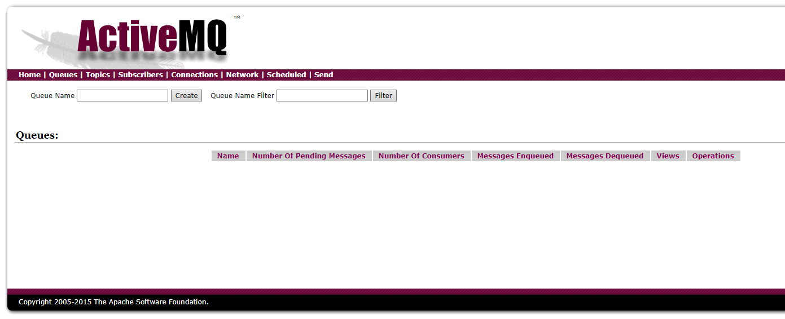

安装ActiveMQ前需要保证jdk已经安装好，activemq5.10版本以上的话需要jkd8及以上版本
下载activemq压缩包apache-activemq-5.15.7-bin.tar.gz并上传到/opt目录中，并解压缩

启动activemq服务
进入到activemq文件夹中的bin目录，运行./activemq start 命令启动activemq服务

进入activemq的web界面控制台
端口号默认为8161，可以通过activemq目录下的conf文件夹中的jetty.xml文件编辑端口号

web界面控制台的账号默认为admin，密码默认为admin，可以通过activemq目录下的conf文件夹的jetty-realm.properties文件来编辑修改

登录web界面控制台

